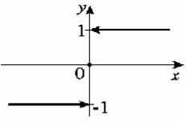
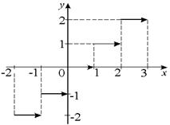

10.1. Понятие функции. График функции. Способы задания функции
Понятие функции – одно из основных математических понятий,
оно относится к установлению соответствия между элементами двух множеств.
Если задано правило ,
по которому каждому элементу  из множества
из множества  поставлен в соответствие единственный
элемент
поставлен в соответствие единственный
элемент  из множества
из множества  ,
то говорят, что на множестве задана функция
.
,
то говорят, что на множестве задана функция
.
из множества поставлен в соответствие единственный
элемент из множества ,
то говорят, что на множестве задана функция
. Множество называется областью
определения функции (ООФ) и обозначается .
называется областью
определения функции (ООФ) и обозначается . Множество изменения функции называется
областью значений функции (ОЗФ) и обозначается .
называется
областью значений функции (ОЗФ) и обозначается .В дальнейшем будем рассматривать (в основном) числовые
функции, т.е. функции, у которых ООФ и ОЗФ являются числовыми множествами, , .
В этом случае переменная величина называется независимой
переменной или аргументом, величина -
зависимой переменной или функцией (от ).
Число , соответствующее данному значению , называется частным значением функции
в точке .
называется независимой
переменной или аргументом, величина -
зависимой переменной или функцией (от ).
Число , соответствующее данному значению , называется частным значением функции
в точке .Множество точек плоскости  называется графиком функции
называется графиком функции  .
.
называется графиком функции .Функция может быть задана: 1) аналитически; 2) графически;
3) с помощью таблицы.
При аналитическом задании функция может быть
определена:
- явно – уравнением вида или
;
- неявно – уравнением вида ;
- параметрически – с помощью вспомогательной переменной – параметра
.
Явное задание:
1˚. ;
2˚.
3˚. –
знак ,
, 
4˚. Функция Дирихле
5˚. – целая часть (наибольшее целое, не превосходящее )
(наибольшее целое, не превосходящее ),
;
эта функция может быть задана в виде
.

Неявное задание:
уравнение может определять
не одну, а несколько функций вида . Так, уравнение определяет две функции:
. Так, уравнение определяет две функции:и
.
Аналитический способ задания функции является наиболее
точным и предпочтительным для дальнейшего исследования функции методами
математического анализа. Графическое и табличное описание возникает, например,
при исследовании экспериментально наблюдаемых функциональных зависимостей, но и
в этом случае обычно подбирают подходящую аналитическую формулу, с достаточной
степенью точности воспроизводящую экспериментальные данные (так называемая аппроксимация).